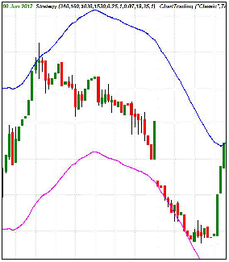

A type of technical indicator typically formed by two moving averages that define upper and lower price range levels. An envelope is a technical indicator used by investors and traders to help identify extreme overbought and oversold conditions in a market. The envelopes, which typically appear overlaid on a price chart, are also useful in identifying trading ranges for a particular trading instrument.
A moving average envelope calculates two moving averages using the high price and low price inputs. Both averages are calculated using price data from the same number of bars, as determined by the input length. The average of the high price is increased by a user-specified percent and then plotted; the average of the low price is reduced by a user-specified percentage and then plotted. The envelope inputs can be customized to suit each investor's or trader's style and preferences.
While traders may interpret and apply the information in unique ways, many traders use an envelope so that a sell signal occurs when price reaches the upper band, signifying an overbought market, and a buy signal occurs when price drops to the lower band, representing an oversold market. Since a trading instrument's price tends to stay within the range represented by an envelope, the theory is that prices will continue to bounce between the upper and lower thresholds.
{kind=link}